Eggless Chocolate Cake Recipe
Eggless Chocolate Cake recipe is a soft and rich dessert made with whole wheat flour, cocoa powder, sweeteners, lemon juice and vanilla, using a neutral oil for moisture, resulting in a decadent, guilt-free treat perfect for any occasion. This easy one-bowl recipe is also a simple vegan cake you’re sure to come back to time and again. Unbelievably soft and light, you won’t believe that this decadent, chocolatey sponge cake is actually made with healthy whole wheat flour.
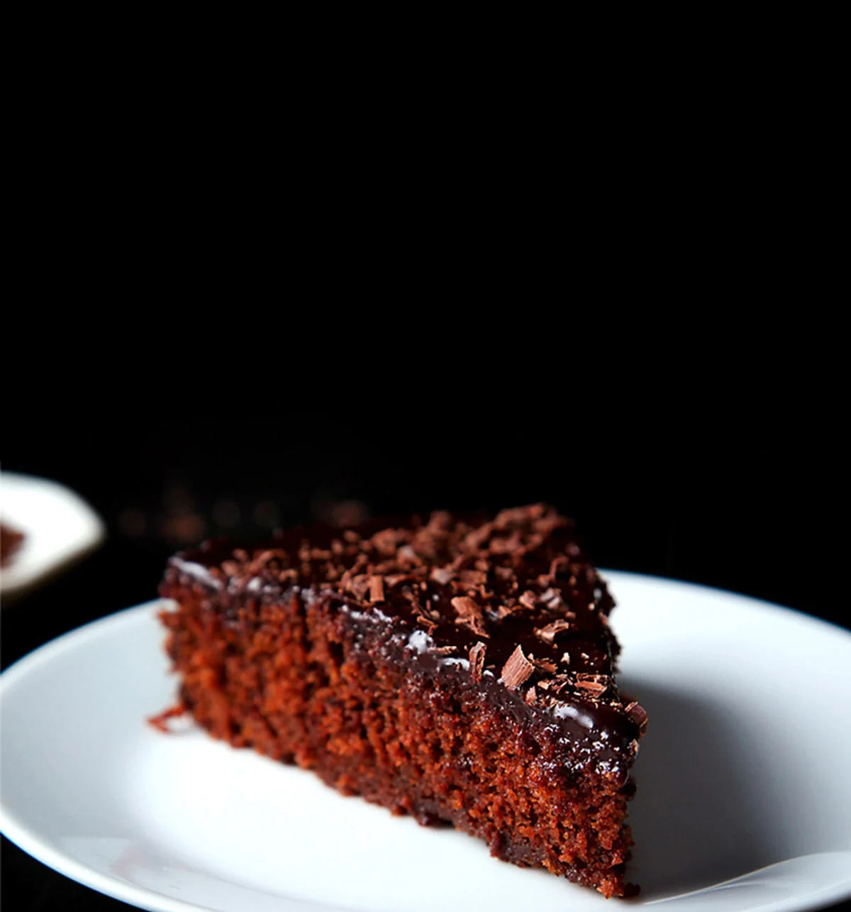How to make Eggless Chocolate Cake
Prep Pan & Sift Dry Ingredients
1. First grease a round baking pan of 7.5 inches diameter x 2 inches height with oil. Preheat your oven to 200 degrees Celsius (392 degrees Fahrenheit) for 15 minutes.
2. Sieve 1 cup whole wheat flour (you can also use all-purpose flour) and 3 tablespoons cocoa powder. Keep a plate or tray below the sieve.
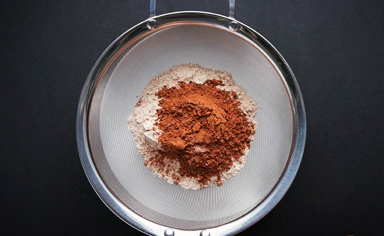3. Add a pinch of salt and ½ teaspoon baking soda.
4. Sift the ingredients on to a plate.
5. Keep the sieved dry ingredients aside.
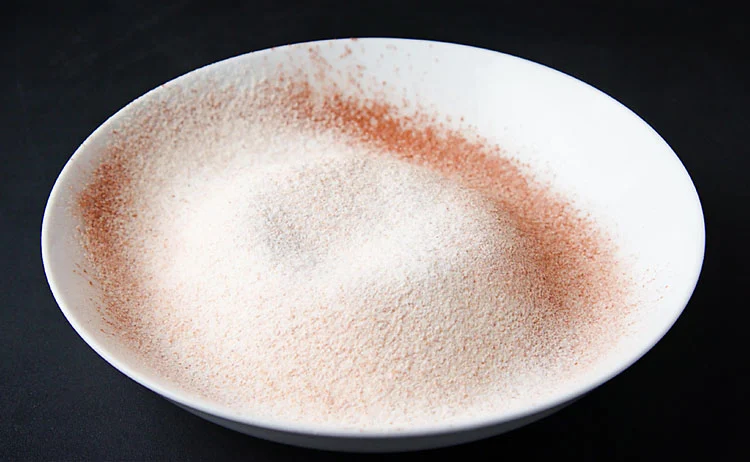Make Liquid Mixture
6. In another pan or bowl, add ¾ cup sugar. I have used raw, unrefined cane sugar, however regular white sugar can also be used.
Add 1 cup cold water. The water has to be very cold.
7. Stir with a small whisk till the sugar dissolves.
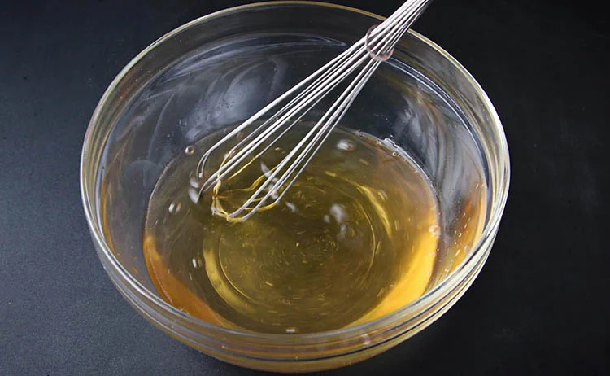8. Now add ¼ cup oil. I added sunflower oil.
9. Stir briskly so that everything is mixed well.
10. It should be a homogenous and even mixture.
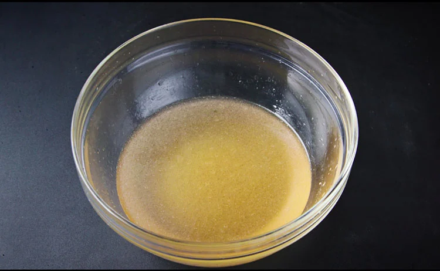11. Next add 1 tablespoon lemon juice. Stir again.
12. Now add ½ teaspoon vanilla extract. Feel free to add chocolate extract or chocolate essence instead of vanilla.
13. Mix very well.
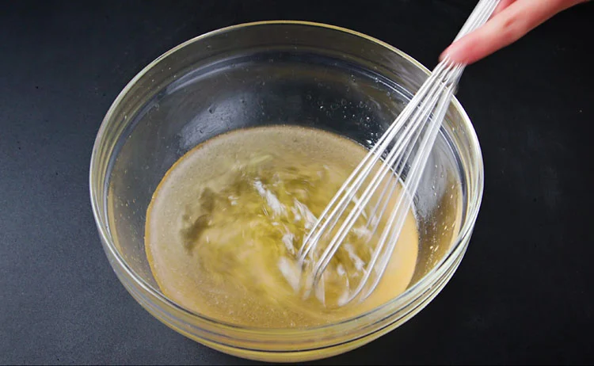Make Cake Batter
14. Add the sieved dry ingredients to the wet mixture.
15. Using a wired whisk, mix everything well.
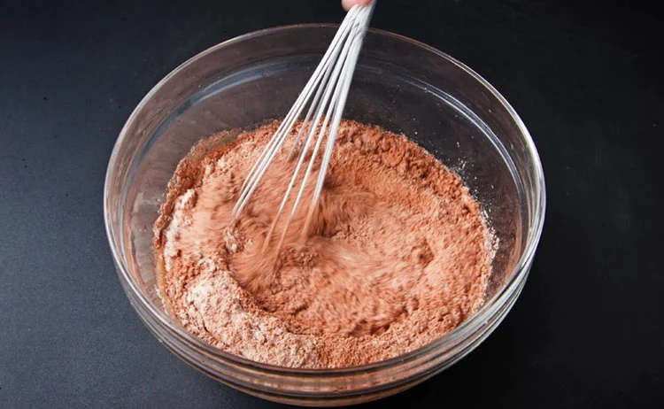16. There should be no lumps in the cake batter. The batter should also be slightly thin, not thick like a brownie batter.
17. Pour the eggless chocolate cake batter into the prepared cake pan.
18. Tap the sides so that the extra air bubbles are let out.
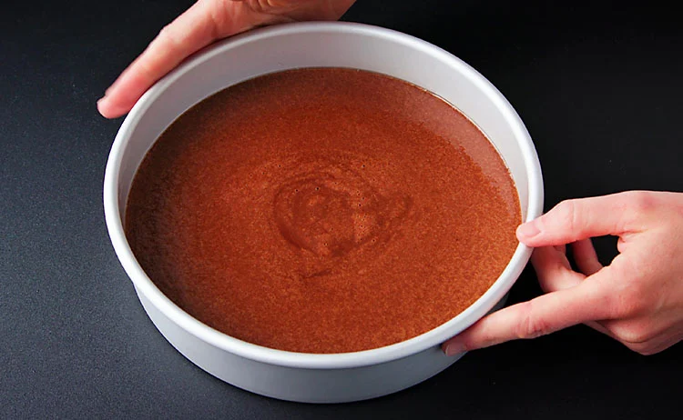Bake Eggless Chocolate Cake
19. Bake the eggless chocolate cake in a preheated oven for 200 degrees Celsius (392 degrees Fahrenheit) for 35 to 40 mins.
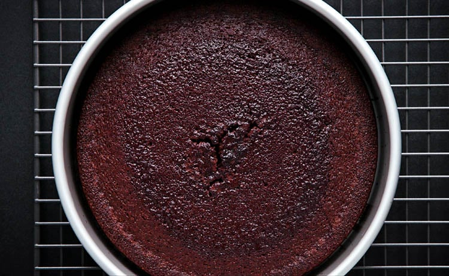20. For doneness check the chocolate cake with a bamboo skewer or toothpick. The bamboo skewer should come out clean.
If the toothpick is sticky with the batter, then place the chocolate cake back in the oven and continue to bake for some more minutes.
Once the eggless chocolate cake cools down enough to handle, remove it from the baking tin and place it on a wired rack to finish cooling. Before frosting, let the cake cool completely.
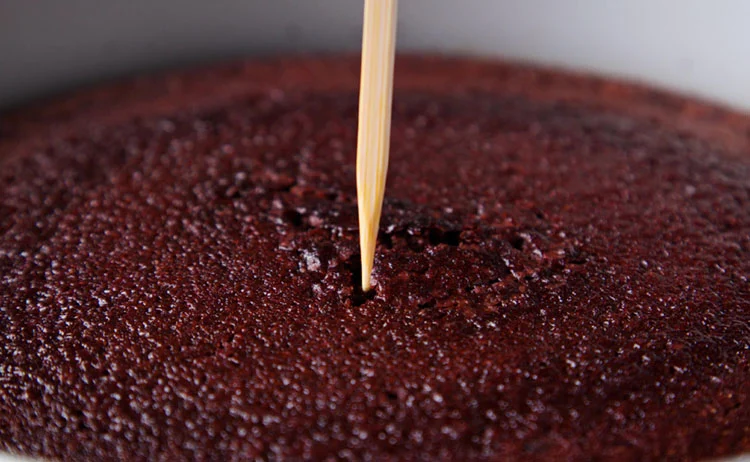Make Cocoa Frosting
21. This frosting recipe makes for more of a thin chocolate glaze. Take 1 tablespoon sunflower oil, ¼ cup almond milk and ¼ cup raw sugar in a small saucepan.
22. Begin to heat the pan on a low flame. Mix very well, continuing to stir, so that the sugar is dissolved into the milk.
Do not boil the almond milk, but just make it lightly hot enough to dissolve the sugar.
23. When the almond milk is just lightly hot and after all the sugar has been dissolved, add 3 tablespoons cocoa powder.
24. With a small wired whisk, mix and stir so that the cocoa powder gets mixed evenly.
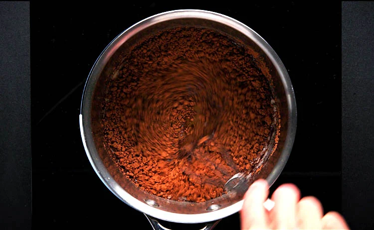25. The cocoa frosting is ready now. Switch off the flame.
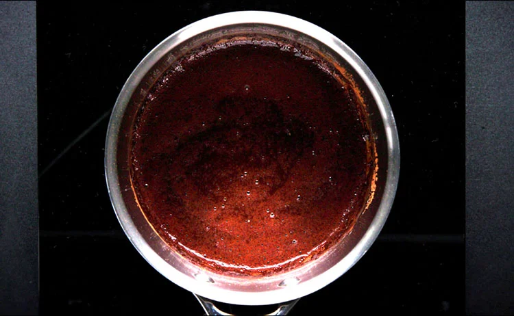Frost Cake
26. While still hot, pour the frosting on the top and sides of the eggless chocolate cake.
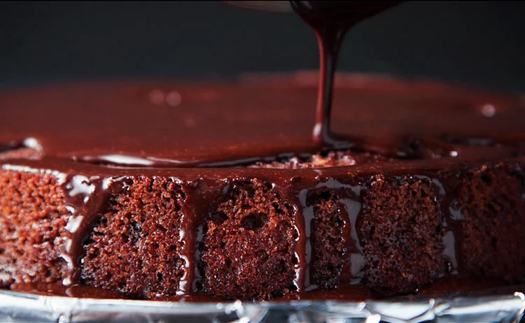27. With an offset spatula, spread the icing evenly all over on top and the sides of the eggless chocolate cake. If you want a layer cake, you can slice the chocolate cake in half and spread frosting in the center and then on the top.
Keep the vegan chocolate cake covered in the fridge for the frosting to set for a couple of hours. I like to use a dome-shaped bowl to cover the cake. Make sure there is enough space between the cake and the bowl which you are using for covering.
The frosting will set after a few hours. I kept it in the fridge overnight.
28. For a little added pizzazz, feel free to top your cake with some simple decor. I recommend chocolate shavings, sprinkles or sliced nuts. If they are in season, fresh berries are also a nice complement to chocolate cake.
If you want to make a more intricate design, try holding a doily over the top of the cake and sift icing sugar or cocoa powder over the top to look like lace.
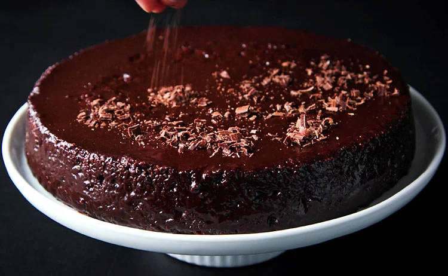29. The eggless chocolate cake is ready to be served. Slice and enjoy!
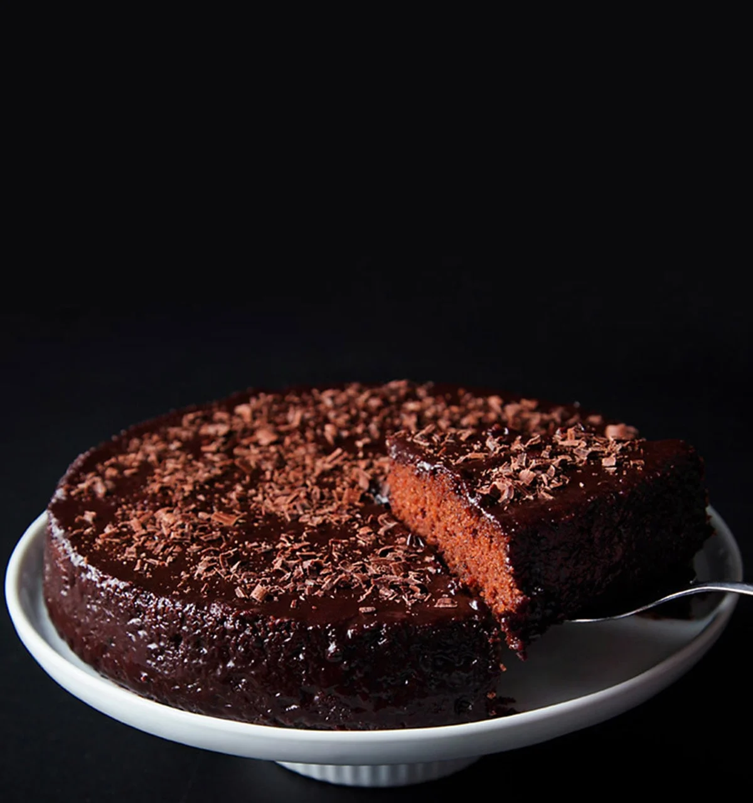